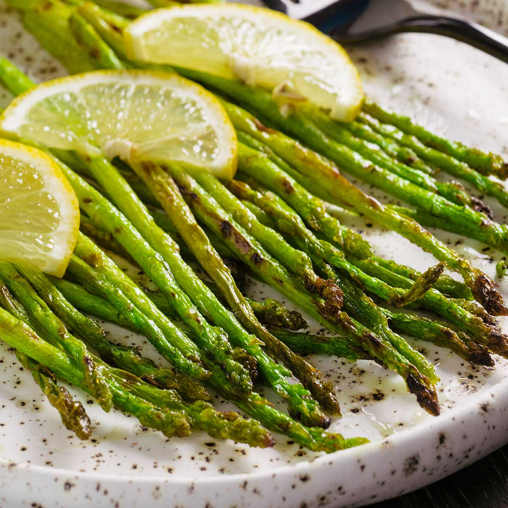

Grilled asparagus

Description
Grilled asparagus is simple to make,
but it lets you enjoy the natural flavor of your veggies.
Fresh asparagus spears are coated with a bit of oil, salt, and pepper
and cooked quickly over high heat on the grill. That's it!
Ingredients
- 1 pound fresh asparagus spears, trimmed
- 1 tablespoon olive oil
- salt and pepper to taste
Steps
- Preheat an outdoor grill for high heat and lightly oil the grate.
- Lightly coat the asparagus spears with olive oil. Season with salt and pepper to taste.
- Cook asparagus on the preheated grill, turning often until lightly charred and fork-tender about 3 to 5 minutes.